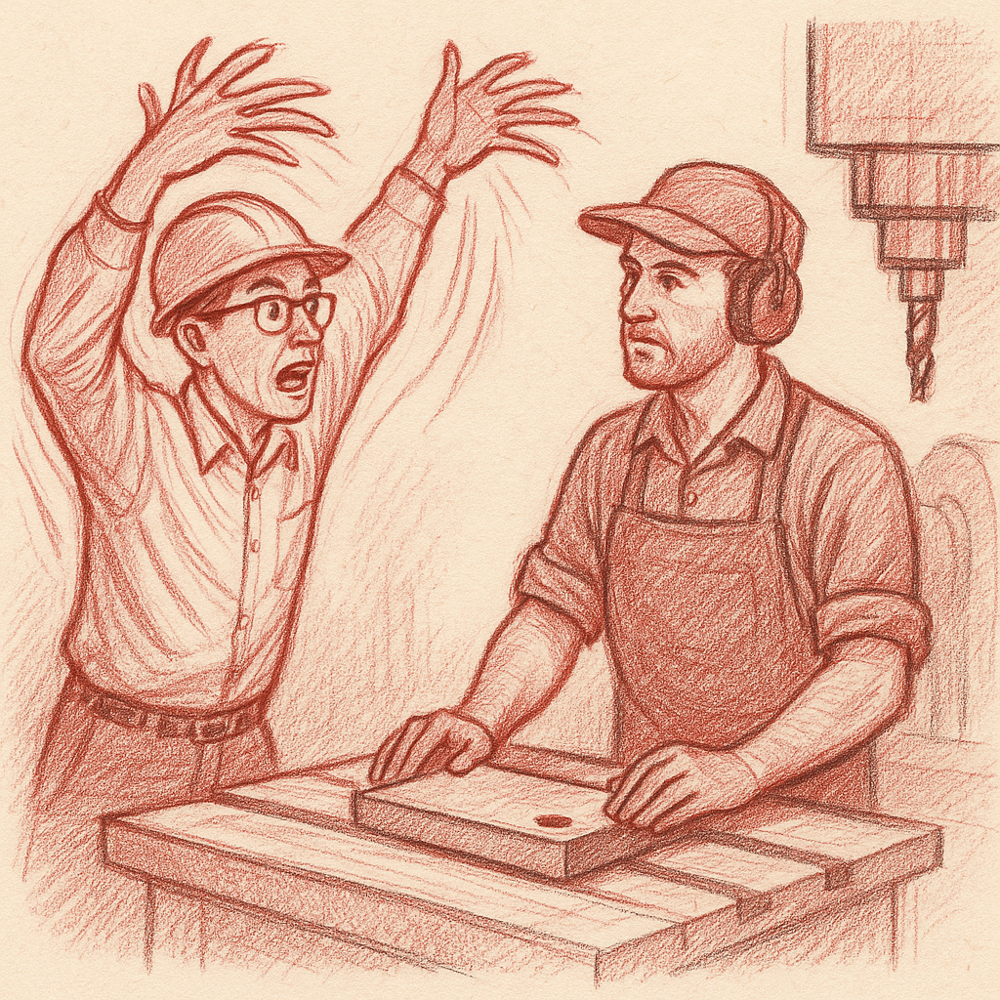

How the Engineers Got Their Drawings
 n the High and Far-Off Times, O my Best Beloved, when the Great Machines were not yet born and the World was full of things that needed making
n the High and Far-Off Times, O my Best Beloved, when the Great Machines were not yet born and the World was full of things that needed making
Now attend and listen; for this befell and behappened and became, and was altogether so, O Best Beloved, when the Tame Men first began to make Things-That-Work instead of Things-That-Don't.
In those days, which were before your Daddy's Daddy's Daddy's time, there lived in the land two most important tribes of Making-Men. The first tribe lived up-high in Towers-of-Much-Thinking, and they were called Engineers (but we will call them the Dream-Catchers, because that sounds more comfy). These Dream-Catchers had 'normous brains full of wheels-and-pulleys-and-such, and they spent their time thinking Tremendous Thoughts about How Things Should Be.
The second tribe lived down-low in Valleys-of-Much-Banging, near the fires that never went out, and they were called Machinists (but we will call them the Metal-Whisperers, because they could make iron do anything except talk back respectfully). These Metal-Whisperers had 'normous hands that knew exactly how to tickle metal until it became the right shape, and they had tools that were older than your Great-Aunt's teeth.

Now the Dream-Catchers would come dancing down from their Towers-of-Much-Thinking, all excited and fluttery, waving their arms like palm trees in a hurricane, crying, "O you Metal-Whisperers! We have dreamed the most beautifullest Thing-That-Should-Be! It is approximately this big—" (and they would spread their arms wide) "—and roughly this thick—" (and they would pinch their fingers) "—and about this roundy—" (and they would draw circles in the air with their noses, which looked very silly indeed).
But the Metal-Whisperers would scrunch up their faces like prunes in the sun and say, "What means this 'approximately,' O Dream-Catchers? What means this 'roughly'? What means this 'about'? We know only Exactly-So and Precisely-Thus and Not-One-Hair's-Breadth-Different! Speak to us in the True Language of How-Big-and-How-Much, or go back to your Towers-of-Much-Thinking and leave us in peace with our hammers and files!"
Then the Dream-Catchers would wave their arms even more frantically and cry, "But can you not see in your mind's eye the beautiful Thing-That-Should-Be?" And the Metal-Whisperers would say, "We see only hand-wavings and approximately-nesses, which are no good for making Things-That-Work!"
So the Metal-Whisperers would go to their forges and try to make the Thing-That-Should-Be, but because they only had hand-wavings to guide them, they made Things-That-Were-Nearly-Right-But-Not-Quite. And when the Dream-Catchers saw these Things-That-Were-Nearly-Right-But-Not-Quite, they would cry, "Oh! Oh! No, no, no! Not like that at all! More roundy! Less thick! Different-altogether!" And the Metal-Whisperers would growl like angry bears and say, "Then tell us Exactly-So the first time, you waving-armed peoples!"
This went on for years and years and years, O Best Beloved, until the valleys were full of Things-That-Were-Nearly-Right-But-Not-Quite, and everybody was cross as two sticks, and no proper Thing-That-Works ever got made at all.
But there was one small Dream-Catcher called Young-and-Eager (because he was both), and one large Metal-Whisperer called Old-and-Wise (because he was both even more so). And they were tired of all this cross-ness and nearly-right-but-not-quite-ness.
So one day, when the sun was high and the other Dream-Catchers were having their afternoon think-time in the Towers-of-Much-Thinking, and the other Metal-Whisperers were having their afternoon hammering-and-filing-time in the Valleys-of-Much-Banging, Young-and-Eager and Old-and-Wise met secretly in the Middle-Ground-of-Neither-Here-Nor-There.
"O Old-and-Wise," said Young-and-Eager, "I am most tremendously tired of waving my arms like a palm tree in a hurricane. Will you teach me the True Language of Exactly-So?"
"O Young-and-Eager," said Old-and-Wise, "I am most tremendously tired of making Things-That-Are-Nearly-Right-But-Not-Quite. Will you teach me the True Language of How-Things-Should-Be?"
So they sat down together under the Neither-Here-Nor-There Tree, and for seven days and seven nights (which is the proper time for making important things), they worked and worked and worked. Young-and-Eager learned to speak in Exactly-So's and Precisely-Thus's, and Old-and-Wise learned to see Things-That-Should-Be in his mind's eye.
And together they made the First-and-Most-Important Drawing! It was covered all over with Lines-That-Mean-Something and Numbers-That-Tell-Exactly-How-Much and Circles-That-Show-Precisely-Where. Every line had a purpose, every number had a place, and every measurement was Exactly-So and Not-One-Hair's-Breadth-Different.
When they showed this First-and-Most-Important Drawing to both tribes, something wonderful happened. The Dream-Catchers looked at it and said, "O! This shows exactly the Thing-That-Should-Be that was in our minds!" And the Metal-Whisperers looked at it and said, "O! This tells us exactly how to make the Thing-That-Should-Be with our hands!"
Then all the tribes gathered together and made the Great Treaty of Dimensions (which was written on the back of the First-and-Most-Important Drawing, so it wouldn't get lost). The Treaty said:
"From this day forward and backward and sideways, O Tribes of Making, no Dream-Catcher shall ask for Things-That-Should-Be-Made without first making the Drawing-That-Shows-Exactly-How. And no Metal-Whisperer shall begin making Things until they have received the Drawing-That-Shows-Exactly-How. This is the Law, the Law of Making-Things-Right-the-First-Time, and happy are those who keep it!"
And from that day to this very day, O Best Beloved, all the Making-Men honor the Great Treaty of Dimensions. Even now, when they have magic boxes with glowing screens that can show Things-That-Should-Be from every which way and sideways too, they still make the Drawings-That-Show-Exactly-How. Because the wise ancestors knew that Making-Things-Right-the-First-Time is better than Making-Things-Nearly-Right-But-Not-Quite, and that Speaking-in-Exactly-So is better than Waving-Arms-Like-Palm-Trees.
So the next time you see a Dream-Catcher making careful drawings covered all over with Lines-That-Mean-Something and Numbers-That-Tell-Exactly-How-Much, remember the story of Young-and-Eager and Old-and-Wise, who made peace between the Tribes of Making by inventing the Language-of-Exactly-So.
And that's how the Engineers got their Drawings, O Best Beloved. That's how it all began in the High and Far-Off Times when everything was just so—so!